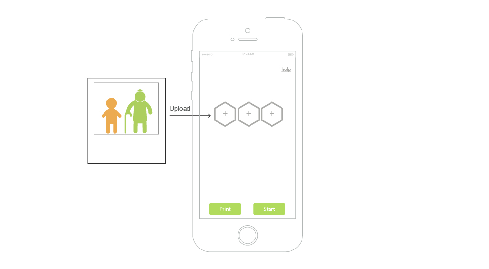
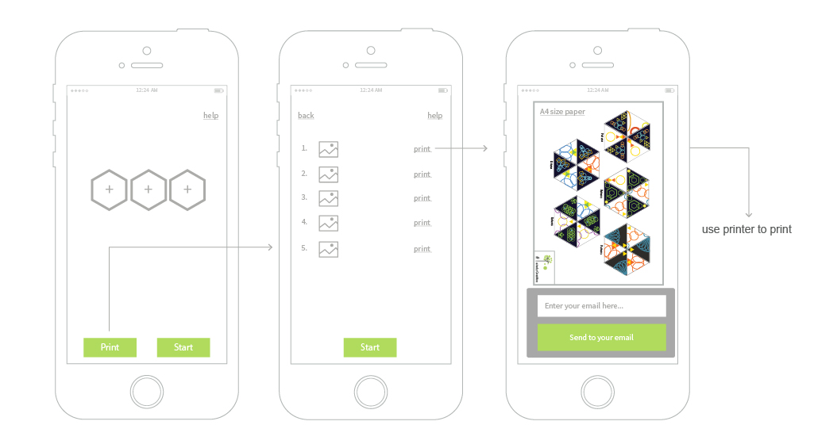
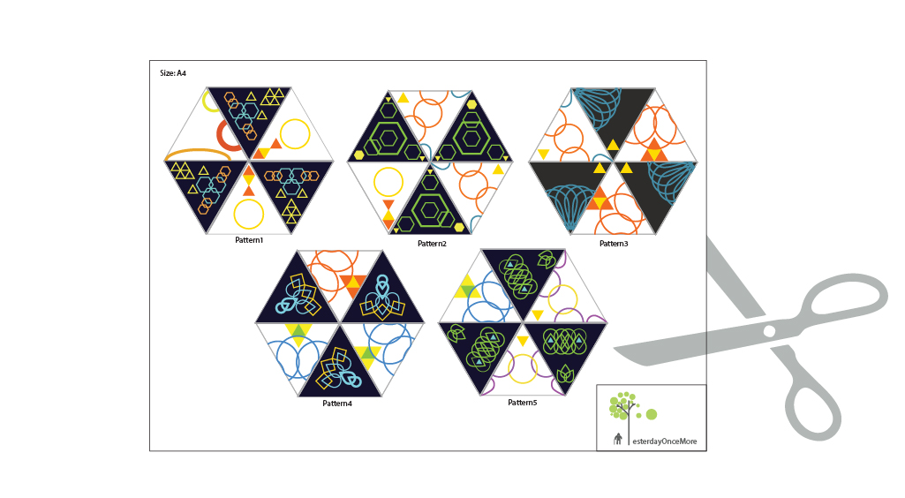
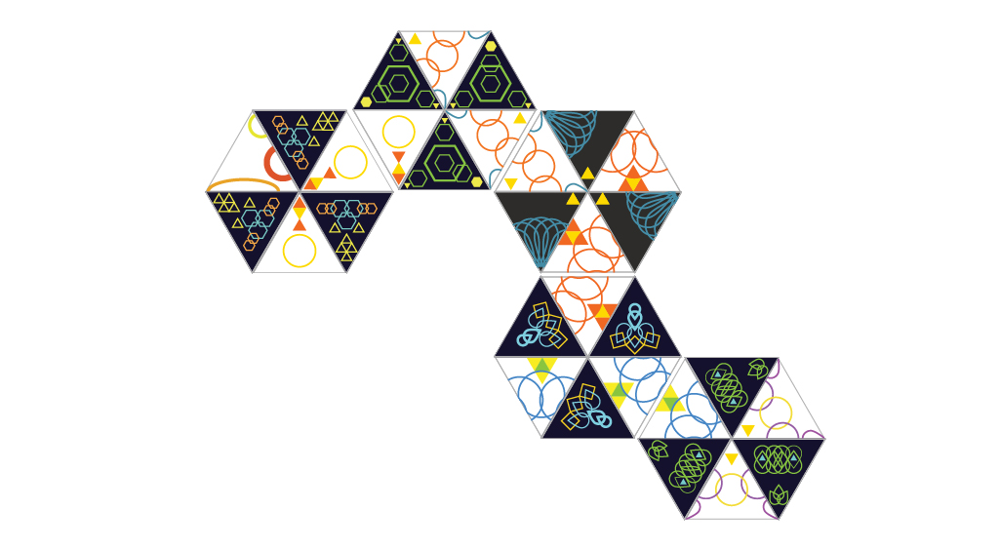
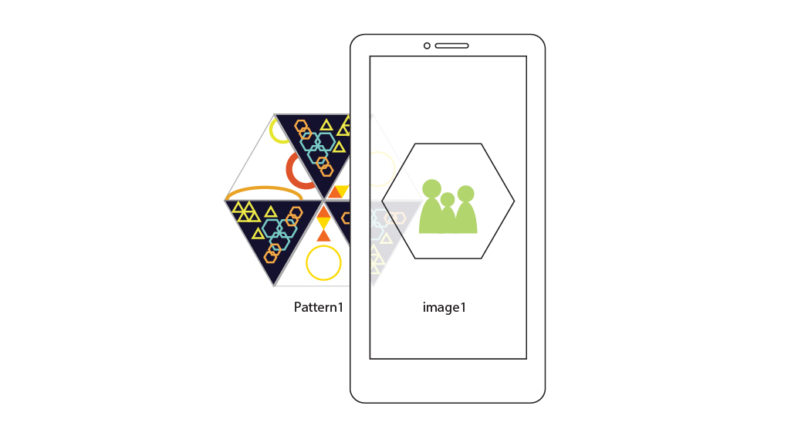

Step 1: Families upload the images to the application.

Step 2: Each image is related to a pattern. The pattern can be sent to the uses own email. Then the users can print it out.

Step 3: Cut off the pattern.

Step 4: Now it’s the time for the dementia patient to train their brain by arranging the patterns in right order.

Step 5: The patients use their devices to scan the pattern, then the families image will be displayed on the screen for them to reminiscence the past.
